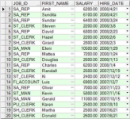

2.7 排序
前面介绍了采用SELECT语句，通过各种方式查询出所需的行、列数据。不过取回行的顺序是由Oracle数据库服务器决定的，本节将会介绍如何对查询出来的数据进行排序显示。
2.7.1 排序初步
要在一个不明确顺序的查询结果中对行进行排序，可以使用ORDER BY子句，它必须位于SQL语句的最后。指定一个表达式，或者一个字段名，作为排序条件。ORDER BY子句的语法形式如下：
ORDER BY {column, expr} [ASC|DESC]
其中ORDER BY {column, expr}指定需要排序的字段或表达式，ASC以升序排列，DESC以降序排列，默认以升序排列。
针对不同的数据类型，其默认升序的含义如下：
对于数字类型，小的值在前面显示。
对于日期类型，早的日期在前面显示。
对于字符类型，依字母顺序显示，a在前，z最后。
对于空值，升序排序时显示在最后，降序排序时显示在最前面。
如果要查询出雇员表的职位编号、名字和薪水信息，且按薪水从低到高的顺序进行排列显示，其SQL语句如下：
SELECT job_id,first_name,salary FROM employees ORDER BY salary
执行该SQL语句，部分显示结果如图2.26所示。
如果要查询出雇员表的职位编号、名字、薪水和雇佣日期信息，且以雇佣日期降序进行排列，其SQL语句如下：
SELECT job_id,first_name,salary,hire_date FROM employees ORDER BY hire_date DESC
执行该SQL语句，部分显示结果如图2.27所示。
图2.26 ORDER BY子句使用

图2.27 ORDER BY子句降序排列
2.7.2 排序进阶
上面我们使用了字段名进行排序，在ORDER BY子句中，不仅可以使用字段，还可以使用字段别名进行排序。将上面的案例进行些许的调整，看如何使用字段别名进行排序。
SELECT job_id,first_name,salary,hire_date AS hdate FROM employees ORDER BY hdate DESC
该案例中，给hire_date字段设定别名为hdate，在ORDER BY子句中对别名hdate进行降序排序，排序结果没有发生变化。
接下来介绍本章最后一个知识点：多重排序。所谓多重排序，也叫多列排序，即先以一个字段对查询结果进行排序，然后在这个排序的基础上再对另一个字段进行排序，最终显示经多次排序后的查询结果。其中ORDER BY列表的顺序就是排序的顺序。
在ORDER BY子句中，多个指定的字段名之间用逗号分开。如果想要倒序排序一个字段，在该字段名后面增加DESC。可以用没有包括在SELECT子句中的字段排序，但排序的字段必须是表中的字段。
针对雇员表，需要显示雇员的职位编号、名字和薪水信息。先用职位编号顺序排序，再用薪水降序排序，其SQL语句如下，部分显示结果如图2.28所示。
SELECT job_id,first_name,salary FROM employees ORDER BY job_id, salary DESC

图2.28 多重排列